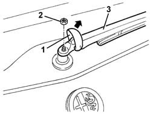

5050C34 rear wiper arm with blade - r+r
- Path
- Procedures > 50 AUXILIARY UNITS > 5050 SCREEN WASHERS AND HEADLAMP WASH/WIPE > 5050C rear wash/wipe > 5050C34 rear wiper arm with blade - r+r
- Kind
- repair procedure (removal / refitting; the operation number is the code)
- Applies to
- all engines; all production periods
- Interactive page
- https://sloeber94.github.io/elrnDB-a147/en/#/3025470
Applies to: all engines; all production periods
 Removing
Removing
 Refitting
Refitting1. Release and lift up the nut cover.
2. Undo the nut.
3. Remove the wiper arm complete with blade.

Applies to: all engines; all production periods
Refitting
RemovingCheck that the wiper arm and the blade are not damaged.
Refit the wiper arm in the correct position and fix it using the nut.
 | Fastening | Component | Ø | Value (daNm) |
|---|---|---|---|---|
- | Nut | REAR SCREEN WIPER ARM | M6 | 0.8 |
Fit the nut cover.
Check that the windscreen wiper is working properly.